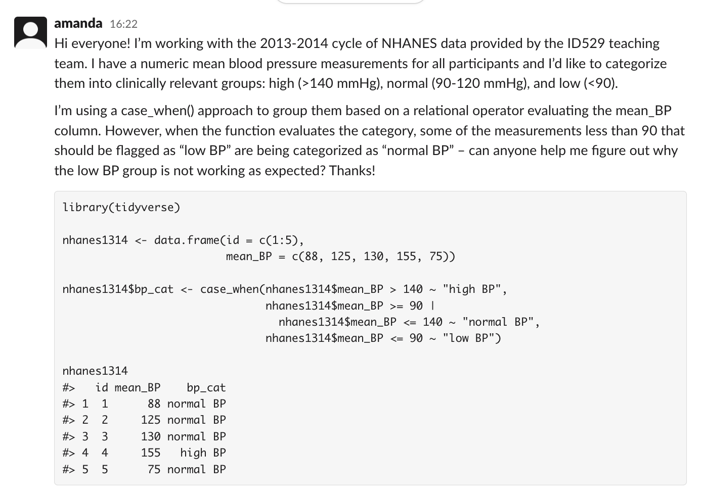

Reproducible examples for getting help in R
Best practices for getting help in R
Don’t ask for someone else to put in more work helping you than you’re willing to put in
Before you ask for help did you:
Google your error message?
Check your spelling? Check your commas?
Ask your question in a way that minimizes the amount of time someone has to spend to answer it
Don’t be a meanie
Pass it on! We’ve all benefited from the time/wisdom of a colleague/stranger – be that for someone else when you can!
- Sometimes it’s helpful just to have someone to talk things through with!
Reproducible Examples
Help us help you! Please continue to ask questions in the #student-questions channel on Slack!

Artwork by @allison_horst
What is a reproducible example?
Reproducible examples:
Use a minimal/basic/small dataset (it doesn’t have to be interesting, it just has to work!)
Are able to be run on any computer (does not depend on data you have on your computer)
Think: what is the simplest version of the data that I need in order to reproduce the error
Advantages of reproducible examples:
Anyone, anywhere in the world can help you!
They can run your code on their computer to recreate the issue
They can help, even if they’re not subject matter experts
You are less likely to get yelled at by a collaborator or on stack overflow
You might even solve your own problem along the way!

Making a reproducible example
Option #1: Recreate your issue with simple dummy data
Option #2: Recreate your issue with built-in datasets
Try
mtcarsoriris- Be familiar with what is in these datasets! They’re commonly used for examples in R4DS and online.
Rows: 32
Columns: 11
$ mpg <dbl> 21.0, 21.0, 22.8, 21.4, 18.7, 18.1, 14.3, 24.4, 22.8, 19.2, 17.8,…
$ cyl <dbl> 6, 6, 4, 6, 8, 6, 8, 4, 4, 6, 6, 8, 8, 8, 8, 8, 8, 4, 4, 4, 4, 8,…
$ disp <dbl> 160.0, 160.0, 108.0, 258.0, 360.0, 225.0, 360.0, 146.7, 140.8, 16…
$ hp <dbl> 110, 110, 93, 110, 175, 105, 245, 62, 95, 123, 123, 180, 180, 180…
$ drat <dbl> 3.90, 3.90, 3.85, 3.08, 3.15, 2.76, 3.21, 3.69, 3.92, 3.92, 3.92,…
$ wt <dbl> 2.620, 2.875, 2.320, 3.215, 3.440, 3.460, 3.570, 3.190, 3.150, 3.…
$ qsec <dbl> 16.46, 17.02, 18.61, 19.44, 17.02, 20.22, 15.84, 20.00, 22.90, 18…
$ vs <dbl> 0, 0, 1, 1, 0, 1, 0, 1, 1, 1, 1, 0, 0, 0, 0, 0, 0, 1, 1, 1, 1, 0,…
$ am <dbl> 1, 1, 1, 0, 0, 0, 0, 0, 0, 0, 0, 0, 0, 0, 0, 0, 0, 1, 1, 1, 0, 0,…
$ gear <dbl> 4, 4, 4, 3, 3, 3, 3, 4, 4, 4, 4, 3, 3, 3, 3, 3, 3, 4, 4, 4, 3, 3,…
$ carb <dbl> 4, 4, 1, 1, 2, 1, 4, 2, 2, 4, 4, 3, 3, 3, 4, 4, 4, 1, 2, 1, 1, 2,…Rows: 150
Columns: 5
$ Sepal.Length <dbl> 5.1, 4.9, 4.7, 4.6, 5.0, 5.4, 4.6, 5.0, 4.4, 4.9, 5.4, 4.…
$ Sepal.Width <dbl> 3.5, 3.0, 3.2, 3.1, 3.6, 3.9, 3.4, 3.4, 2.9, 3.1, 3.7, 3.…
$ Petal.Length <dbl> 1.4, 1.4, 1.3, 1.5, 1.4, 1.7, 1.4, 1.5, 1.4, 1.5, 1.5, 1.…
$ Petal.Width <dbl> 0.2, 0.2, 0.2, 0.2, 0.2, 0.4, 0.3, 0.2, 0.2, 0.1, 0.2, 0.…
$ Species <fct> setosa, setosa, setosa, setosa, setosa, setosa, setosa, s…Option #2b: Recreate your issue with other common datasets
mtcars and iris are built in data sets, but other good ones are
starwars(in thedplyr::package),penguins(in thepalmerpenguins::package), andflights(in thenycflights13::package)These might provide you with a little more complexity (some missingness, more data, different classes), while still being relatively simple/intuitive
Rows: 87
Columns: 14
$ name <chr> "Luke Skywalker", "C-3PO", "R2-D2", "Darth Vader", "Leia Or…
$ height <int> 172, 167, 96, 202, 150, 178, 165, 97, 183, 182, 188, 180, 2…
$ mass <dbl> 77.0, 75.0, 32.0, 136.0, 49.0, 120.0, 75.0, 32.0, 84.0, 77.…
$ hair_color <chr> "blond", NA, NA, "none", "brown", "brown, grey", "brown", N…
$ skin_color <chr> "fair", "gold", "white, blue", "white", "light", "light", "…
$ eye_color <chr> "blue", "yellow", "red", "yellow", "brown", "blue", "blue",…
$ birth_year <dbl> 19.0, 112.0, 33.0, 41.9, 19.0, 52.0, 47.0, NA, 24.0, 57.0, …
$ sex <chr> "male", "none", "none", "male", "female", "male", "female",…
$ gender <chr> "masculine", "masculine", "masculine", "masculine", "femini…
$ homeworld <chr> "Tatooine", "Tatooine", "Naboo", "Tatooine", "Alderaan", "T…
$ species <chr> "Human", "Droid", "Droid", "Human", "Human", "Human", "Huma…
$ films <list> <"The Empire Strikes Back", "Revenge of the Sith", "Return…
$ vehicles <list> <"Snowspeeder", "Imperial Speeder Bike">, <>, <>, <>, "Imp…
$ starships <list> <"X-wing", "Imperial shuttle">, <>, <>, "TIE Advanced x1",…Option #2b: Recreate your issue with other common datasets
mtcars and iris are built in data sets, but other good ones are
starwars(in thedplyr::package),penguins(in thepalmerpenguins::package), andflights(in thenycflights13::package)These might provide you with a little more complexity (some missingness, more data, different classes), while still being relatively simple/intuitive
Rows: 344
Columns: 8
$ species <fct> Adelie, Adelie, Adelie, Adelie, Adelie, Adelie, Adel…
$ island <fct> Torgersen, Torgersen, Torgersen, Torgersen, Torgerse…
$ bill_length_mm <dbl> 39.1, 39.5, 40.3, NA, 36.7, 39.3, 38.9, 39.2, 34.1, …
$ bill_depth_mm <dbl> 18.7, 17.4, 18.0, NA, 19.3, 20.6, 17.8, 19.6, 18.1, …
$ flipper_length_mm <int> 181, 186, 195, NA, 193, 190, 181, 195, 193, 190, 186…
$ body_mass_g <int> 3750, 3800, 3250, NA, 3450, 3650, 3625, 4675, 3475, …
$ sex <fct> male, female, female, NA, female, male, female, male…
$ year <int> 2007, 2007, 2007, 2007, 2007, 2007, 2007, 2007, 2007…Option #2b: Recreate your issue with other common datasets
mtcars and iris are built in data sets, but other good ones are
starwars(in thedplyr::package),penguins(in thepalmerpenguins::package), andflights(in thenycflights13::package)These might provide you with a little more complexity (some missingness, more data, different classes), while still being relatively simple/intuitive
Rows: 336,776
Columns: 19
$ year <int> 2013, 2013, 2013, 2013, 2013, 2013, 2013, 2013, 2013, 2…
$ month <int> 1, 1, 1, 1, 1, 1, 1, 1, 1, 1, 1, 1, 1, 1, 1, 1, 1, 1, 1…
$ day <int> 1, 1, 1, 1, 1, 1, 1, 1, 1, 1, 1, 1, 1, 1, 1, 1, 1, 1, 1…
$ dep_time <int> 517, 533, 542, 544, 554, 554, 555, 557, 557, 558, 558, …
$ sched_dep_time <int> 515, 529, 540, 545, 600, 558, 600, 600, 600, 600, 600, …
$ dep_delay <dbl> 2, 4, 2, -1, -6, -4, -5, -3, -3, -2, -2, -2, -2, -2, -1…
$ arr_time <int> 830, 850, 923, 1004, 812, 740, 913, 709, 838, 753, 849,…
$ sched_arr_time <int> 819, 830, 850, 1022, 837, 728, 854, 723, 846, 745, 851,…
$ arr_delay <dbl> 11, 20, 33, -18, -25, 12, 19, -14, -8, 8, -2, -3, 7, -1…
$ carrier <chr> "UA", "UA", "AA", "B6", "DL", "UA", "B6", "EV", "B6", "…
$ flight <int> 1545, 1714, 1141, 725, 461, 1696, 507, 5708, 79, 301, 4…
$ tailnum <chr> "N14228", "N24211", "N619AA", "N804JB", "N668DN", "N394…
$ origin <chr> "EWR", "LGA", "JFK", "JFK", "LGA", "EWR", "EWR", "LGA",…
$ dest <chr> "IAH", "IAH", "MIA", "BQN", "ATL", "ORD", "FLL", "IAD",…
$ air_time <dbl> 227, 227, 160, 183, 116, 150, 158, 53, 140, 138, 149, 1…
$ distance <dbl> 1400, 1416, 1089, 1576, 762, 719, 1065, 229, 944, 733, …
$ hour <dbl> 5, 5, 5, 5, 6, 5, 6, 6, 6, 6, 6, 6, 6, 6, 6, 5, 6, 6, 6…
$ minute <dbl> 15, 29, 40, 45, 0, 58, 0, 0, 0, 0, 0, 0, 0, 0, 0, 59, 0…
$ time_hour <dttm> 2013-01-01 05:00:00, 2013-01-01 05:00:00, 2013-01-01 0…Option #3: Modify your own data
There may be something specific to your data that is hard to recreate with another dataset.
If that is the case, you can consider sharing a small and stripped down version of your data so that someone else can reproduce it.
When asking for help: Writing a good request
Provide context:
Go back to your pseudocode and use that as an outline for describing where something is going wrong:
What do you have? (describe the type of data or analysis)
What are you trying to accomplish?
What have you tried already?
What is the issue with what you’ve tried?
When asking for help: Providing useful code
Cut anything unrelated to the issue
Keep anything that is required, including loading specific packages
- If a package is particularly obscure, consider using
packagename::function()
- If a package is particularly obscure, consider using
If you’re including your own dataset, use intuitive variable names and good coding practices
Write in lower case and use
_instead of.Provide concise and meaningful variable names
Example: Creating blood pressure categories
Let’s imagine that we want to create a new variable that categorizes participants by blood pressure. We want to create column called bp_cat that groups them into the following bins:
high BP (>140 mm Hg)
low BP (< 90 mm Hg)
normal BP (90-140 mm Hg)
# nhanes1314 <- data.frame(id = c(1:5),
# mean_BP = c(88, 125, 130, 155, 75))
summary(nhanes$mean_BP) Min. 1st Qu. Median Mean 3rd Qu. Max. NA's
83.33 108.00 117.33 120.85 130.00 216.67 92
high BP normal BP <NA>
294 1953 92 Drafting a message
Describe the type of data or analysis:
- I’m working with the 2013-2014 cycle of NHANES data provided by the ID529 teaching team.
What are you trying to accomplish?
- I have a numeric mean blood pressure measurements for all participants and I’d like to categorize them into clinically relevant groups (high, low, normal).
Drafting a message
What have you tried already?
- I’m using a
case_when()approach to group them based on a relational operator evaluating the mean_BP column.
What is the issue with what you’ve tried?
- Measurements less than 90 should be flagged as “low BP” but are being categorized as “normal BP”
Putting it all together
140 mmHg), normal (90-120 mmHg), and low (<90). I'm using a case_when() approach to group them based on a relational operator evaluating the mean_BP column. However, when the function evaluates the category, some of the measurements less than 90 that should be flagged as 'low BP' are being categorized as 'normal BP' -- can anyone help me figure out why the low BP group is not working as expected? Thanks!" class="r-stretch quarto-figure-center">More best practices for posting code on Slack:
What we don’t want to see:
Everything is named “dat” and “dat1” when intuitive names are more appropriate
Really long lines of code on one line
Try to limit to ~80 characters
Use new lines after a
%>%or+
what we do want to see:
Apply some of these best practices
Use Slack’s code and code block in your messages to help organize your message
updates: if you resolve your own question, post the solution as a thread on the original post. That way others can learn from what you did.
Make sure your question is clear – run it by a friend first, if needed!
Make sure your question isn’t redundant – people will just redirect you to the answer
How do I find a good reprex?
- https://stat.ethz.ch/R-manual/R-patched/library/datasets/html/00Index.html
How do I not get yelled at on the internet?
Use the most minimally reproducible dataset
If relevant, include the session info, R version
Don’t post screenshots of the code (check out
reprex::for best practices)Read more: https://stackoverflow.com/questions/5963269/how-to-make-a-great-r-reproducible-example/16532098